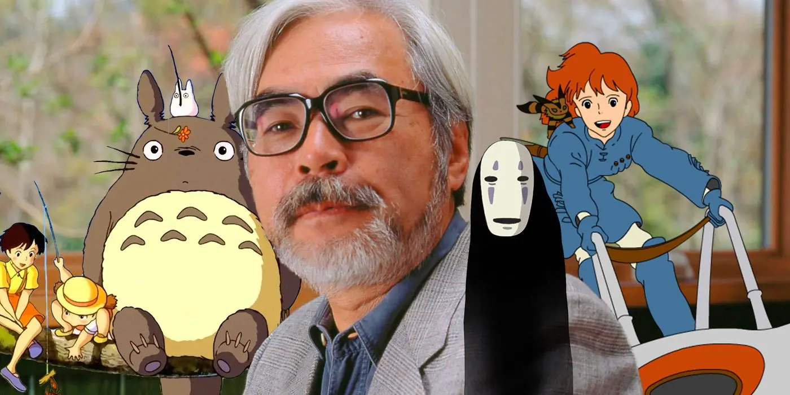
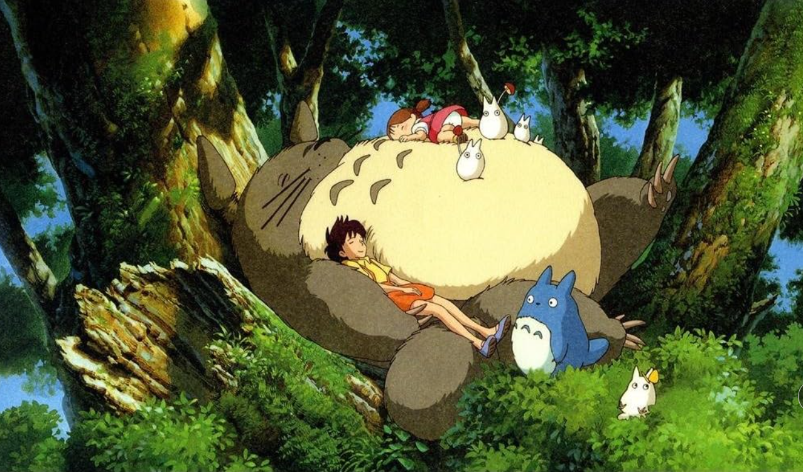
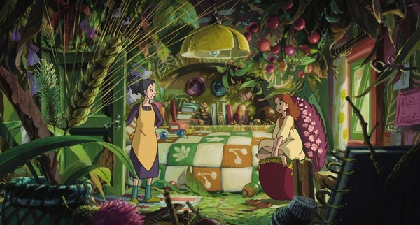
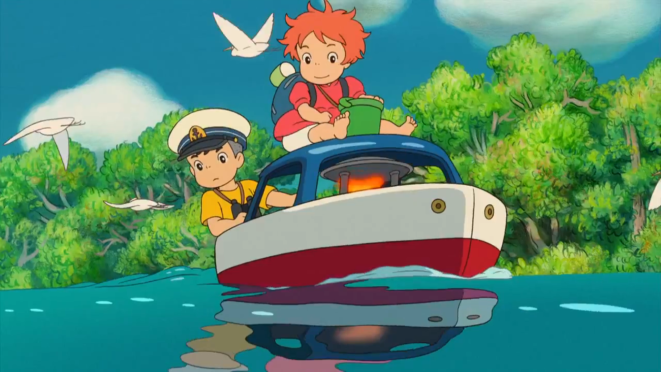

O Studio Ghibli é um estúdio japonês de animação fundado em 1985 por
Hayao Miyazaki e Isao Takahata, com a colaboração do produtor Toshio Suzuki.
A produtora é conhecida por criar filmes que unem fantasia, natureza e emoções humanas.
Suas histórias delicadas e visual marcante conquistaram públicos de todas as idades,
tornando o estúdio uma referência mundial na animação.

A animação japonesa: Meu Amigo Totoro foi lançada em 1988, dirigido por Hayao Miyazaki, um dos fundadores do Studio Ghibli. A história se passa no interior do Japão e acompanha duas irmãs, Satsuki e Mei, que se mudam para uma casa antiga enquanto a mãe se recupera de uma doença.
Durante a adaptação à nova vida, as meninas passam a explorar a natureza ao redor da casa e descobrem a existência de espíritos da floresta. Entre eles está Totoro, uma criatura grande e gentil que representa a imaginação infantil e a relação harmoniosa com o meio ambiente, característica marcante dos filmes do Studio Ghibli.
Lançado nos primeiros anos do estúdio, o filme ajudou a definir o estilo narrativo do Studio Ghibli, com histórias simples, ritmo calmo e foco nas emoções do cotidiano. Com o tempo, Totoro tornou-se o mascote oficial do estúdio, simbolizando a sensibilidade e o encanto presentes em suas produções.

O Mundo dos Pequeninos é um filme de animação japonês de 2010, dirigido por Hiromasa Yonebayashi e mais uma das produções do Studio Ghibli. A história acompanha Arrietty, uma jovem pertencente a um povo minúsculo que vive escondido nas casas humanas, sobrevivendo ao pegar emprestado pequenos objetos do mundo dos humanos.
Vivendo sob regras rígidas para não serem vistos, os Pequeninos precisam manter sua existência em segredo. A rotina de Arrietty muda quando ela conhece um garoto humano, dando início a uma amizade que coloca em risco o equilíbrio entre os dois mundos e revela temas frequentes nas produções do Studio Ghibli, como empatia e respeito.
Lançado décadas após a fundação do estúdio, o filme mantém a sensibilidade visual e narrativa característica do Studio Ghibli, mesmo sendo dirigido por um novo cineasta. O Mundo dos Pequeninos reforça a ideia de coexistência entre diferentes mundos, presente em várias obras do estúdio.

Ponyo é um filme de animação japonês que teve sua estreia em 2008, dirigido por Hayao Miyazaki e produzido pelo Studio Ghibli. A história acompanha Ponyo, um peixe dourado mágico que deseja se tornar humana após conhecer Sosuke, um menino que vive à beira-mar.
Ao fugir de casa e entrar em contato com o mundo humano, Ponyo provoca um desequilíbrio na natureza, fazendo com que o mar avance sobre a cidade. A narrativa utiliza elementos fantásticos para abordar temas recorrentes no Studio Ghibli, como amizade, cuidado com o meio ambiente e a força dos sentimentos puros da infância.
Lançado mais de duas décadas após a fundação do estúdio, Ponyo reafirma o estilo visual colorido e artesanal do Studio Ghibli, com animação desenhada à mão e inspiração em contos clássicos. O filme reforça a visão de Miyazaki sobre a relação entre humanidade e natureza, presente em diversas obras do estúdio.
